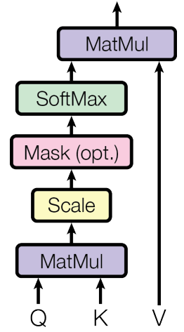
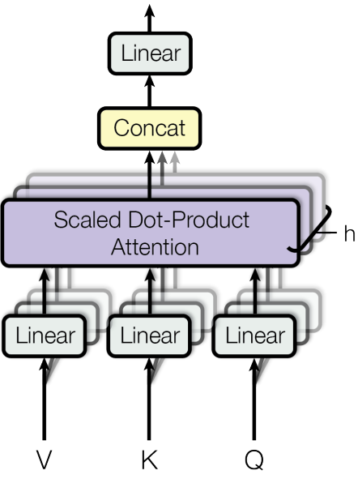
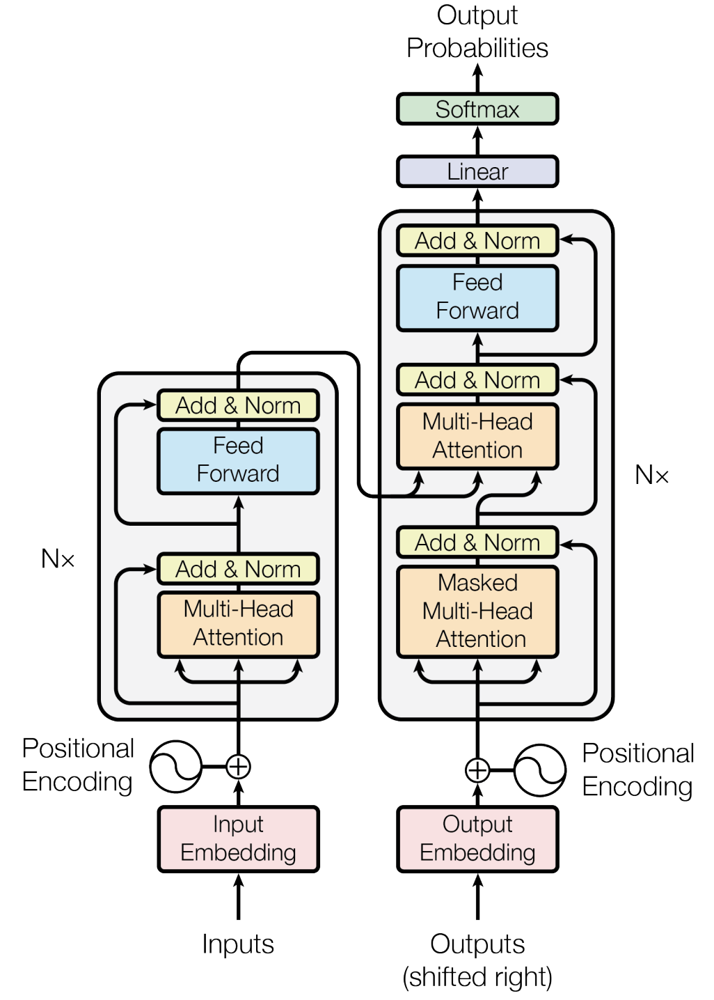

Overview and Revolutionary Impact
This post is my analysis of Attention is All You Need (Vaswani et al., 2017), the paper that introduced the Transformer architecture. This work fundamentally changed natural language processing by showing that attention mechanisms alone—without recurrence or convolution—could achieve state-of-the-art results. The Transformer became the foundation for virtually all modern language models, from BERT to GPT to T5, and its influence extends far beyond NLP into computer vision, speech processing, and beyond.
The Problem: RNNs and CNNs Limitations
Before Transformers, sequence modeling relied heavily on recurrent neural networks (RNNs) and convolutional neural networks (CNNs). These architectures had significant limitations:
- Sequential processing: RNNs process sequences step-by-step, making parallelization difficult
- Vanishing gradients: Long-range dependencies are hard to learn due to gradient decay
- Computational inefficiency: Sequential nature limits training speed
- Memory constraints: Hidden states must be maintained throughout the sequence
The Transformer's key insight was to replace recurrence and convolution entirely with attention mechanisms, enabling parallel processing and better long-range dependency modeling.
The Core: Self-Attention Mechanism
Self-attention allows each position in a sequence to attend to all positions in the same sequence. For a sequence of length \(n\) with input representations \(\mathbf{x} = (x_1, \ldots, x_n)\), the self-attention mechanism computes:
\[ \text{Attention}(\mathbf{Q}, \mathbf{K}, \mathbf{V}) = \text{softmax}\left(\frac{\mathbf{Q}\mathbf{K}^T}{\sqrt{d_k}}\right)\mathbf{V} \]Where \(\mathbf{Q}\), \(\mathbf{K}\), and \(\mathbf{V}\) are the query, key, and value matrices respectively, and \(d_k\) is the dimension of the key vectors. The scaling factor \(\frac{1}{\sqrt{d_k}}\) prevents the dot products from becoming too large.

You can edit the code above and click Run to experiment with a tiny attention toy example directly in the browser (powered by Pyodide).
Multi-Head Attention
Instead of performing attention once, the Transformer uses multiple "heads" in parallel:
\[ \text{MultiHead}(\mathbf{Q}, \mathbf{K}, \mathbf{V}) = \text{Concat}(\text{head}_1, \ldots, \text{head}_h)\mathbf{W}^O \]Where each head is:
\[ \text{head}_i = \text{Attention}(\mathbf{Q}\mathbf{W}_i^Q, \mathbf{K}\mathbf{W}_i^K, \mathbf{V}\mathbf{W}_i^V) \]This allows the model to attend to different types of relationships simultaneously—syntactic, semantic, positional, etc.

Complete Transformer Architecture
The Transformer uses an encoder-decoder architecture:
- Encoder: Maps input sequence to continuous representations
- Decoder: Generates output sequence one element at a time
- Attention connections: Decoder attends to encoder outputs

Encoder Layer
Each encoder layer consists of:
\[ \mathbf{x} = \text{LayerNorm}(\mathbf{x} + \text{MultiHeadAttention}(\mathbf{x})) \] \[ \mathbf{x} = \text{LayerNorm}(\mathbf{x} + \text{FFN}(\mathbf{x})) \]Where FFN is a position-wise feed-forward network: \(\text{FFN}(x) = \max(0, xW_1 + b_1)W_2 + b_2\)
Decoder Layer
Each decoder layer has three sub-layers:
- Masked self-attention: Prevents attending to future positions
- Encoder-decoder attention: Attends to encoder outputs
- Position-wise FFN: Same as encoder
Positional Encoding
Since Transformers have no inherent notion of position, positional encodings are added to input embeddings:
\[ PE_{(pos, 2i)} = \sin(pos / 10000^{2i/d_{model}}) \] \[ PE_{(pos, 2i+1)} = \cos(pos / 10000^{2i/d_{model}}) \]Where \(pos\) is the position and \(i\) is the dimension. This allows the model to understand relative and absolute positions.
Training Details and Optimization
The paper uses several key training techniques:
- Optimizer: Adam with \(\beta_1 = 0.9\), \(\beta_2 = 0.98\), \(\epsilon = 10^{-9}\)
- Learning rate: \(lrate = d_{model}^{-0.5} \cdot \min(step\_num^{-0.5}, step\_num \cdot warmup\_steps^{-1.5})\)
- Regularization: Dropout (\(p = 0.1\)) and label smoothing (\(\epsilon_{ls} = 0.1\))
- Batch size: 25,000 tokens per batch
Key Results and Performance
The Transformer achieved state-of-the-art results on machine translation:
- WMT 2014 English-German: 28.4 BLEU (vs. 25.16 for previous best)
- WMT 2014 English-French: 41.8 BLEU (vs. 40.46 for previous best)
- Training time: 3.5 days on 8 P100 GPUs (vs. weeks for RNNs)
- Parallelization: Much better than RNNs due to attention mechanism
Detailed Results from the Paper
Below I summarize the key experimental results reported in the paper across different tasks and model sizes.
Machine Translation Results
| Model | WMT 2014 EN-DE BLEU | WMT 2014 EN-FR BLEU | Training Time | Parameters |
|---|---|---|---|---|
| Transformer (base) | 28.4 | 41.8 | 12 hours | 65M |
| Transformer (big) | 28.9 | 41.4 | 3.5 days | 213M |
| ConvS2S | 25.16 | 40.46 | 9 days | 38M |
| ByteNet | 23.75 | - | - | - |
| GNMT | 24.6 | 39.92 | - | - |
Model Variants and Ablations
| Model Variant | EN-DE BLEU | Parameters | Training Time |
|---|---|---|---|
| Transformer (6 layers) | 28.4 | 65M | 12 hours |
| Transformer (2 layers) | 27.3 | 37M | 6 hours |
| Transformer (1 layer) | 26.5 | 28M | 3 hours |
| Single-head attention | 27.3 | 65M | 12 hours |
| No positional encoding | 26.8 | 65M | 12 hours |
Computational Complexity Comparison
| Layer Type | Complexity per Layer | Sequential Operations | Maximum Path Length |
|---|---|---|---|
| Self-Attention | O(n²d) | O(1) | O(1) |
| Recurrent | O(nd²) | O(n) | O(n) |
| Convolutional | O(knd²) | O(1) | O(log_k(n)) |
| Self-Attention (restricted) | O(rn²d) | O(1) | O(n/r) |
Key Advantages of Transformers
- Parallelization: All positions can be processed simultaneously
- Long-range dependencies: Direct connections between any two positions
- Interpretability: Attention weights provide insights into model behavior
- Flexibility: Can handle variable-length sequences naturally
- Efficiency: Faster training than RNNs for long sequences
Limitations and Challenges
- Quadratic complexity: Attention scales as O(n²) with sequence length
- Memory requirements: Attention matrices can be very large
- Position encoding: Fixed positional encodings may not generalize well
- Inductive bias: Less built-in structure compared to RNNs/CNNs
- Training instability: Can be sensitive to hyperparameters
Understanding Attention Patterns
The paper provides fascinating insights into what Transformers learn:
- Syntactic relationships: Attention often focuses on grammatically related words
- Semantic similarity: Similar words tend to attend to each other
- Positional patterns: Some heads learn to attend to nearby positions
- Task-specific patterns: Different heads specialize for different linguistic phenomena
Practical Implementation Tips
- Gradient clipping: Essential for training stability
- Warmup schedule: Critical for convergence
- Label smoothing: Improves generalization
- Layer normalization: Applied before sub-layers, not after
- Residual connections: Around each sub-layer
Revolutionary Impact and Legacy
The Transformer architecture has had an unprecedented impact:
- Foundation for modern LLMs: BERT, GPT, T5, PaLM, ChatGPT, etc.
- Beyond NLP: Vision Transformers, speech processing, multimodal models
- Research acceleration: Enabled rapid progress in AI
- Industry adoption: Used in virtually all production language systems
- New paradigms: Prompting, in-context learning, instruction following
Modern Transformer Variants
Countless improvements and variants have been developed:
- Efficient attention: Sparse, linear, and other approximations
- Architecture variants: Decoder-only, encoder-only, prefix-LM
- Scaling laws: Understanding how performance scales with size
- Multimodal extensions: CLIP, DALL-E, GPT-4V
- Specialized variants: Longformer, BigBird, Performer
Future Directions and Open Questions
Ongoing research areas include:
- Efficiency: Reducing computational and memory requirements
- Long sequences: Handling very long contexts effectively
- Reasoning: Improving logical and mathematical reasoning
- Multimodality: Integrating vision, audio, and other modalities
- Interpretability: Understanding what models learn and how
Mathematical Intuition
The attention mechanism can be understood as a differentiable way to:
- Compute similarities: \(\mathbf{Q}\mathbf{K}^T\) measures how much each query should attend to each key
- Normalize attention: Softmax ensures attention weights sum to 1
- Weighted combination: \(\mathbf{V}\) values are combined according to attention weights
This creates a flexible, learnable mechanism for information routing in sequences.
Citation
Vaswani, A., Shazeer, N., Parmar, N., et al. "Attention is All You Need." NeurIPS 2017. Available at https://arxiv.org/abs/1706.03762.